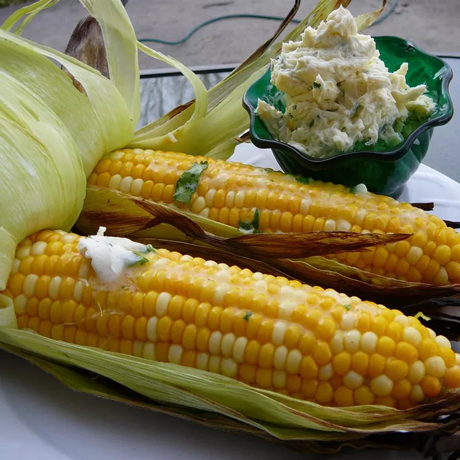

Grilled Corn with Cilantro Lime Butter

Why You Should Make This
This dish is perfect for an outdoor BBQ in the midst of summer.
If you are craving some delicious, nut-busting corn bursting with extreme flavor, definitely try this out. It will also go great with some mashed potatoes and a nice juicy steak. What are you waiting for? Let's get started!
Ingredients
- 1 c butter
- 1/4 c chopped fresh cilantro
- 1 1/2 tbsp fresh lime juice
- 1 pinch cayenne pepper
- 8 ears corn on the cob, unhusked
- 3 qt cold water, or as needed to cover
Directions
- Cream butter in a bowl until that shit is SMOOTH!! Throw in the cilantro, lime juice, and cayenne pepper until thoroughly combined. Cover and refrigerate for 1 hour to blend flavors to make it truly bang.
- Peel husks back from ears of corn starting at the top, but leave the husks attached at the bottom so it can look aesthetic as fuck. Cover corn ears with cold water in a large bowl until husks are soaked (about 20 minutes).
- Fire up the grill on medium heat and lightly oil the grate.
- Place the corn in husks onto the hot grate and grill covered until husks are charred and kernels tender(20-25 minutes), turning that shit often. Strip off the husks off that sexy-ass corn and serve!